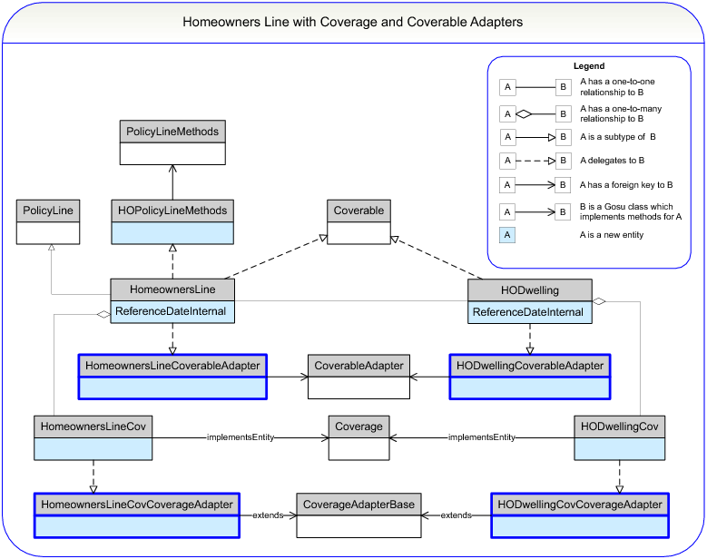

Understanding the Coverable and Coverage Adapters In previous topics, you created coverable and coverage entities. However, other than their names, nothing in the definitions of these entities defines them as either coverable or coverage. Delegates (or adapters) provide the methods that determine whether these entities are coverables or coverages. • The coverable adapter provides methods that a coverable needs, such as methods to link the coverable to the coverage. For example, the coverable adapter provides methods to add a coverage, remove a coverage, or get all coverages. • The coverage adapter provides methods that a coverage needs, such as methods to link the coverage back to the coverable. For example, the coverage adapter provides methods to get the owning coverable and to get the policy line. The following illustration shows the coverable and coverage adapters for the homeowners line. 